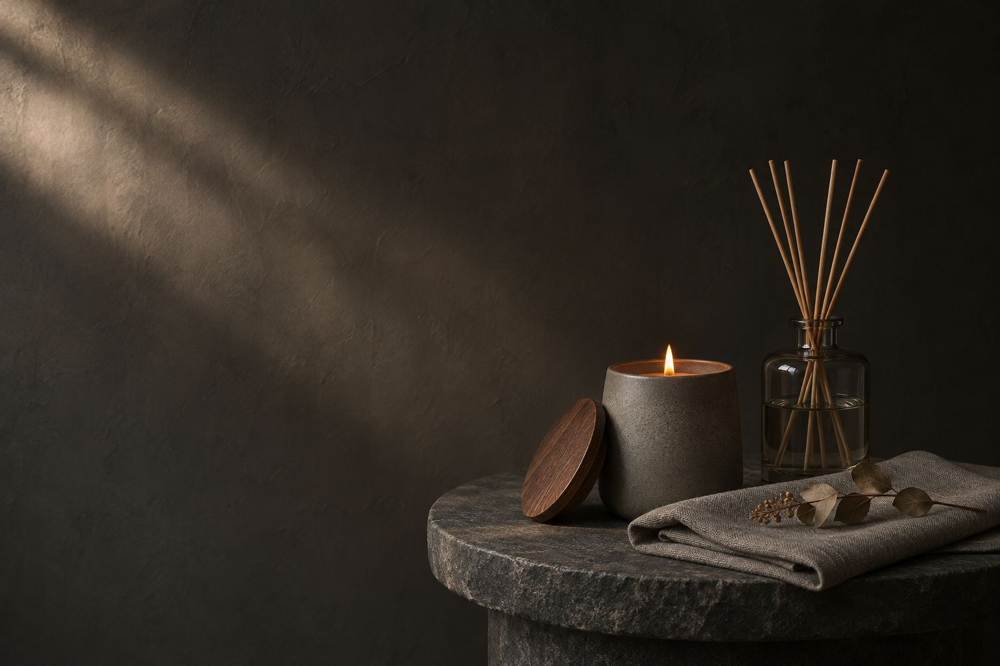

A scent should sit in the room, not fill it.
Strong enough to notice when you walk in, soft enough to forget after a minute. Then notice again.

How we judge a scent and a candle: five principles. If a product can't pass all five, it doesn't go into the range.
Strong enough to notice when you walk in, soft enough to forget after a minute. Then notice again.
The wick is sized to the vessel, so the wax melts edge to edge and nothing is left on the walls.

Glass and ceramic made to be kept. A refill goes into the vessel you already own, with nothing to throw away.

Each scent is named for what it smells like, so you can choose without a sample.

A small vessel for a small room, a large one for a large room. More scent is not better scent.